Independent research extension · NOT ACCEPTED · NOT FOR SALE · Pause & Options v0.1 · Dot status repair r1

◇
暂停
↑ ↓ 选择 ← → 调整音量 Enter 确认 Esc 继续
返回暂停菜单
Review / edit data（舞台外编辑器）
菜单标题（最长 300 字符）
说明文字（最长 20000 字符）
操作名称：继续游戏
操作名称：主音量
操作名称：音效音量
操作名称：键位说明
操作名称：返回标题
键位说明（每行一项，最多 20 行；每行最长 300 字符）
应用编辑
导出 JSON
导入 JSON
键位说明
关闭 / Esc
返回标题画面？
这只是演示状态切换，不会保存、读取或退出真实游戏。
取消
确认返回
完整文字
关闭